2025-06-05
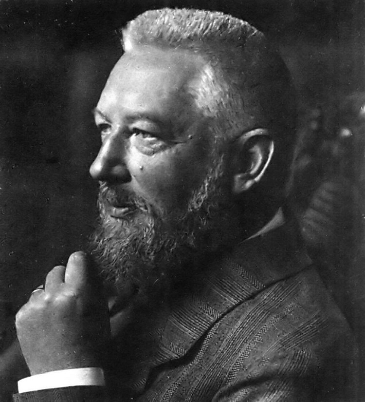
“Wilhelm Friedrich Ostwald […] war ein deutschbaltischer Chemiker, Philosoph, Soziologe, Wissenschaftsorganisator, ‑theoretiker und ‑historiker.”
– Wikipedia (2025)
The scientific study of:
Why are some people rich and others poor?
Why is it sometimes difficult to get people to take climate-friendly actions?
When do people get involved in demonstrations?
Understanding through shared social environments
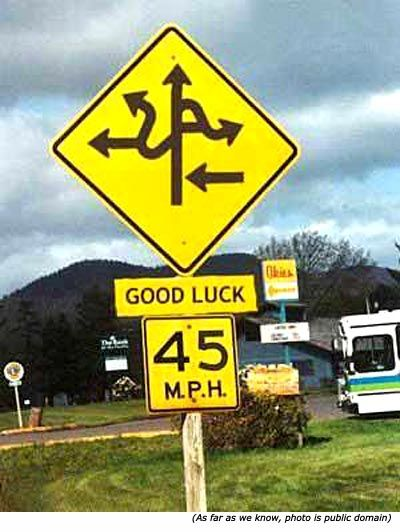
(Data: Germany 2019, Source: Wößmann et al. 2023)
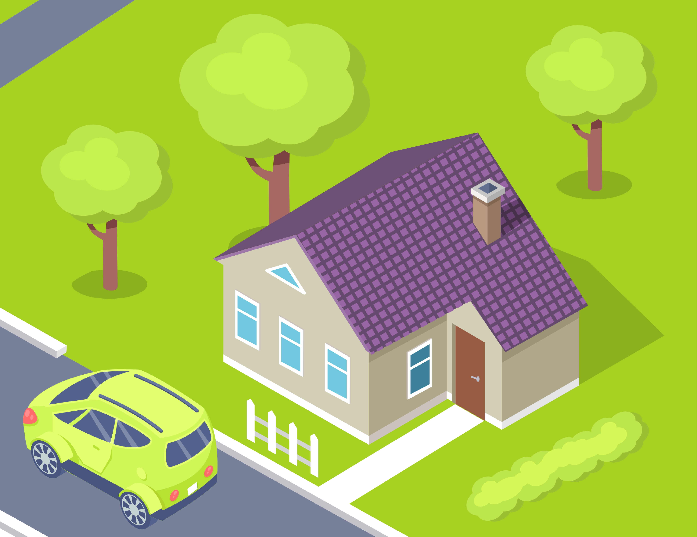 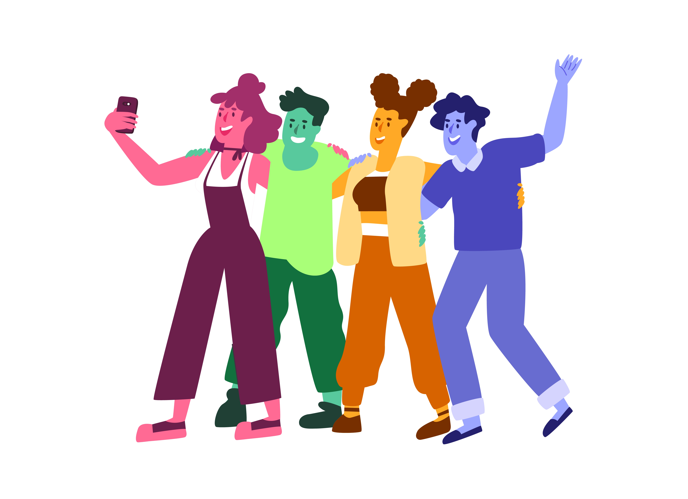
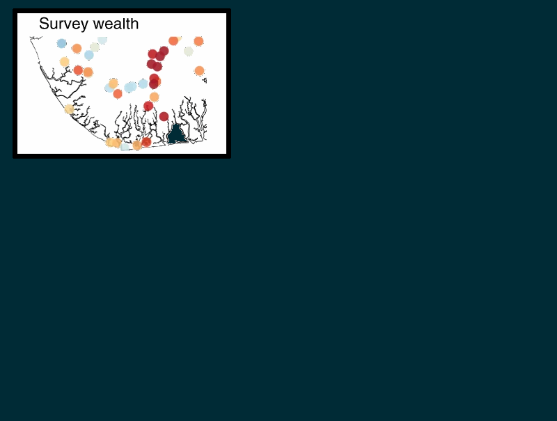
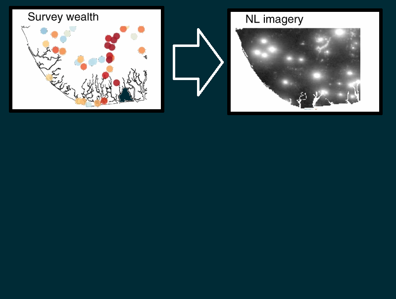
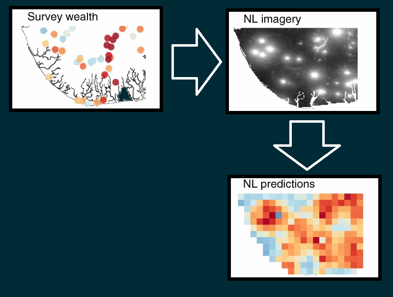
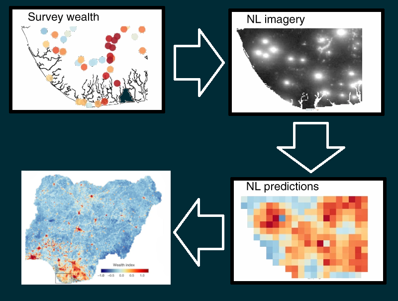
(Source: Yeh et al. 2020)
Higher social status → Higher income
Higher social status → Higher expection in childrens’ future status
Higher education → Higher social status
Therefore:
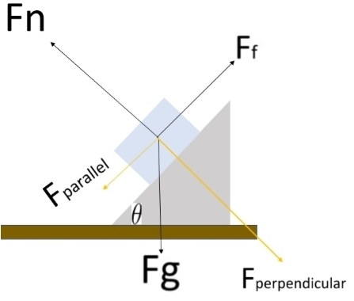
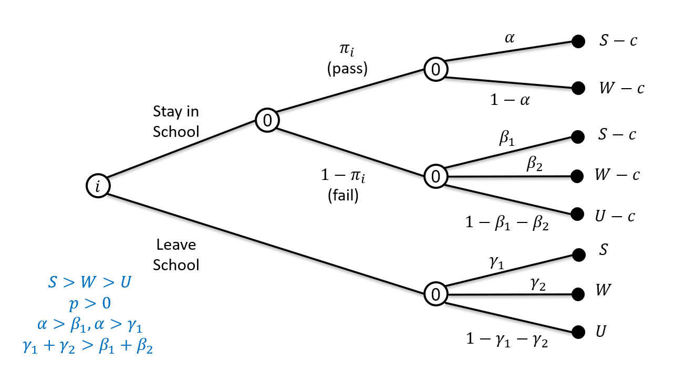
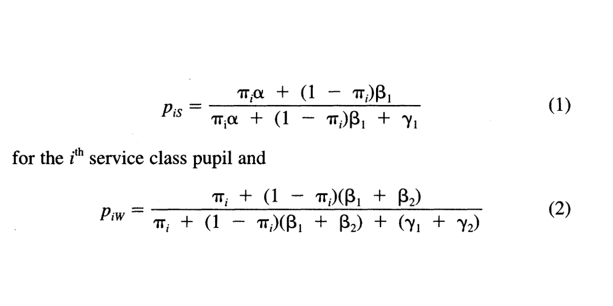
Why do people often sort themselves by characteristics (segregate)?
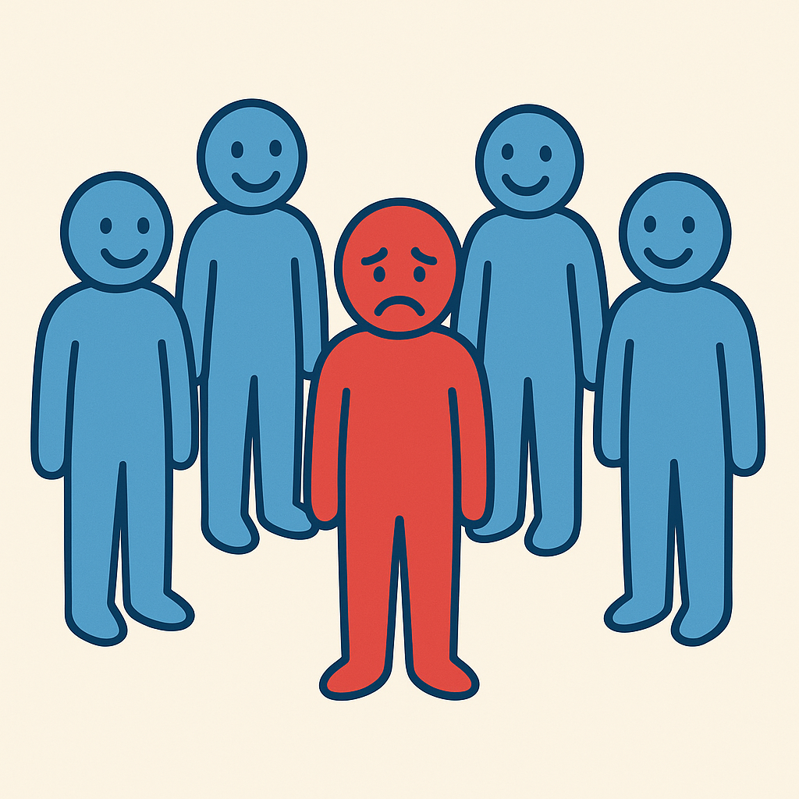
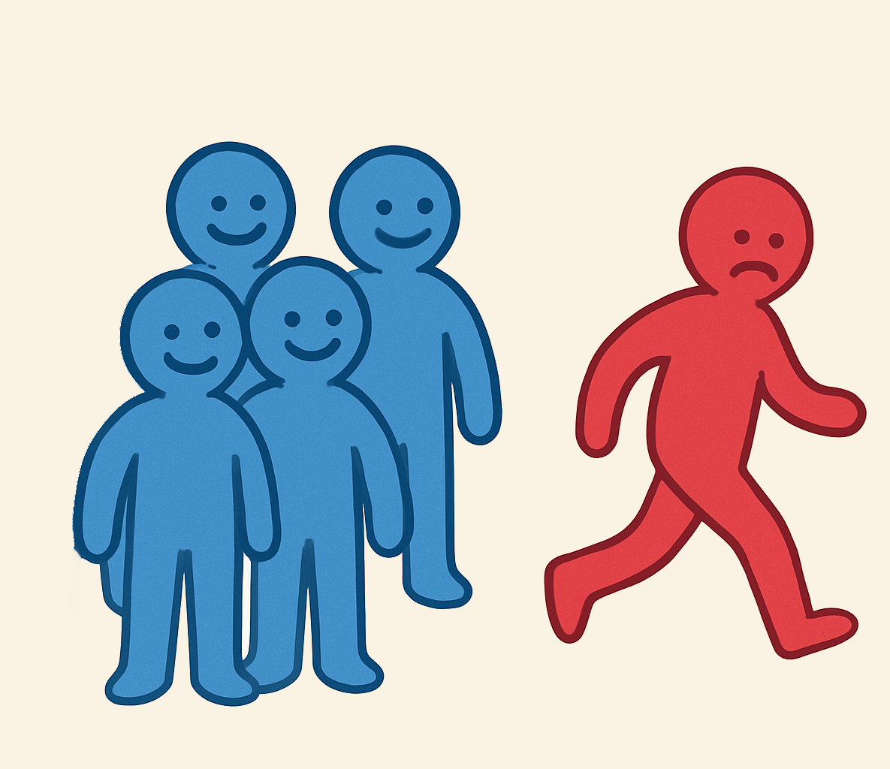
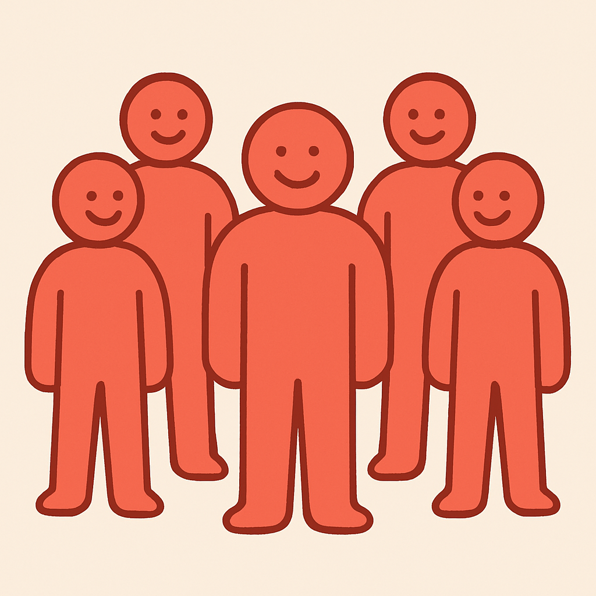
Round: 0
Satisfied: 0 %
Can one norm violation lead to another?
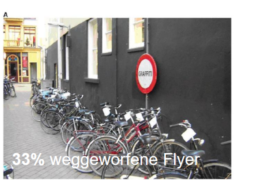
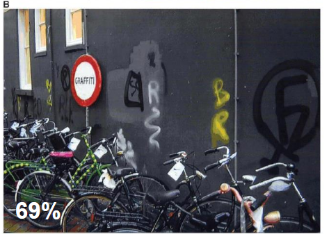
(Keizer et al. 2008)
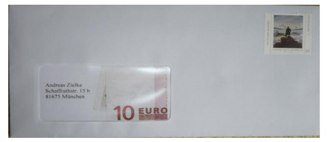
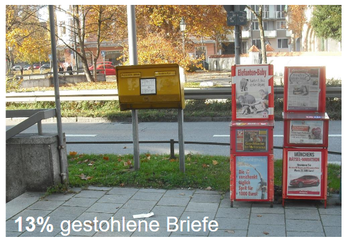
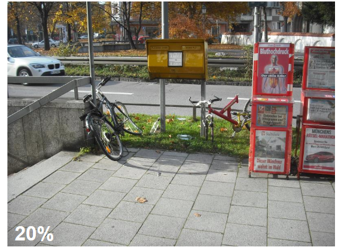
(Keuschnigg & Wolbring 2015)
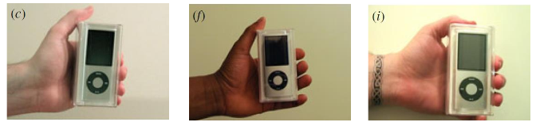
“Black ads”
“Tattooed ads” also underperformed, but to a lesser exten
(Doleac & Stein 2013)
Questions?
Contact: Sascha.Grehl@uni-leipzig.de